Designing a mobile app for an Art Museum

December 2021 - February 2022 (10 weeks)
UX Designer (Certification Project)
OVERVIEW
Business Statement
"...We need to adopt new methods to reach a wider audience and Increase our visitor numbers."
Kahlo Museum of Arts & Culture is a free-entry Museum/Gallery. The Pandemic made it Impossiible for visitors to show up, hitting their business hard. Now, they want to widen their business, adopt new methods to reach a wider audience; and ultimately, increase visitor numbers.
Solution
Accessibility & Community is Key
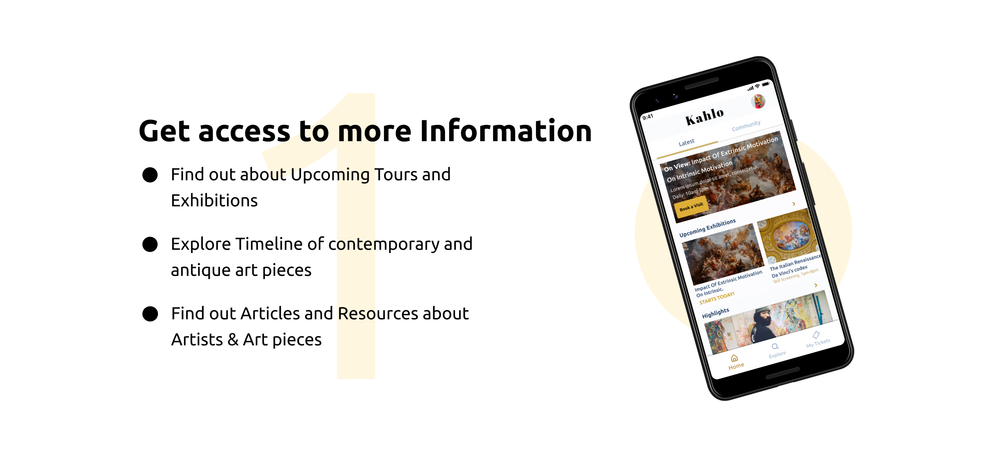 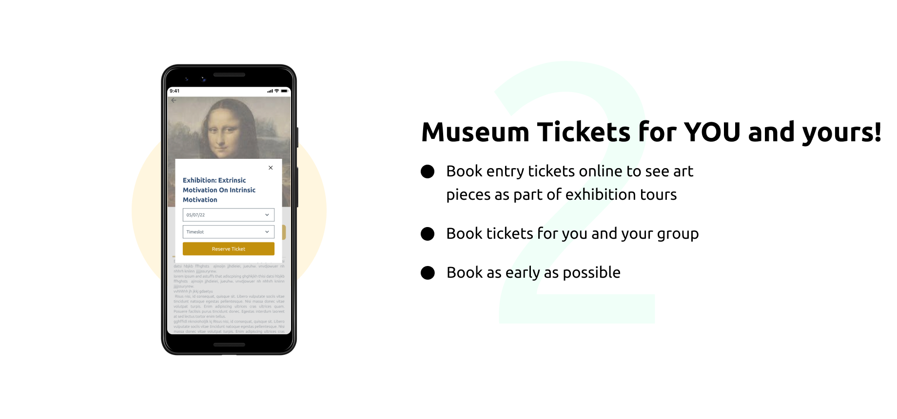 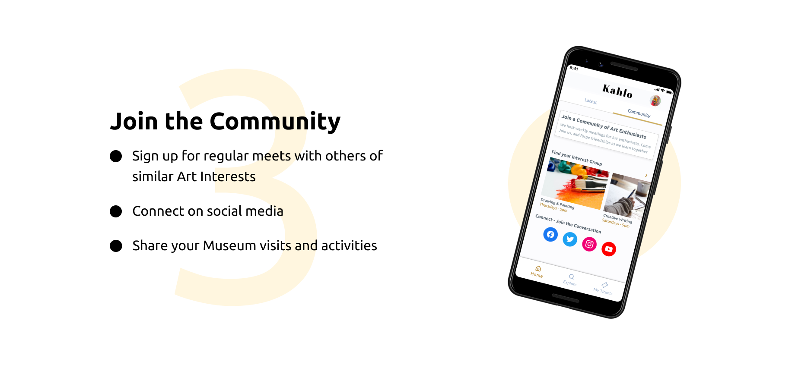PROCESS
Research & Definition
User Interviews
The Interviewees found it inconvenient they could only book tickets onsite.

I sought out, and Interviewed 8 Indivivduals who were art enthusiasts and had visited an art museum/gallery within the past 2 years. I asked them questions about their visits: reasons and frequency. I got them to talk about their expereinces visitng the museums: what they liked, what frustrated them. I affinity mapped the resulting data, finding trends on Personas, Goals, and Pain points.
Personas
Persona: Frequenter

Persona: Casual Visitor

Experience Mapping
Persona: Laide
Goal: Provide Information resource for her art students.
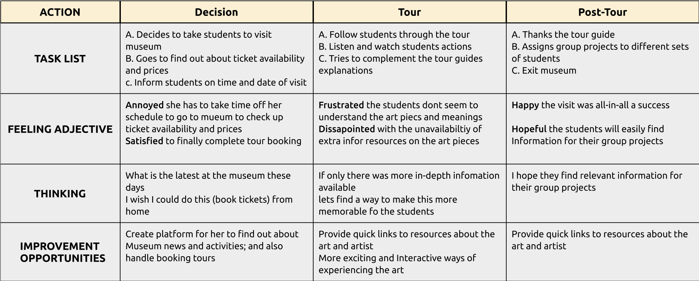Persona: Dara
Experience the local art scene and get Inspired.
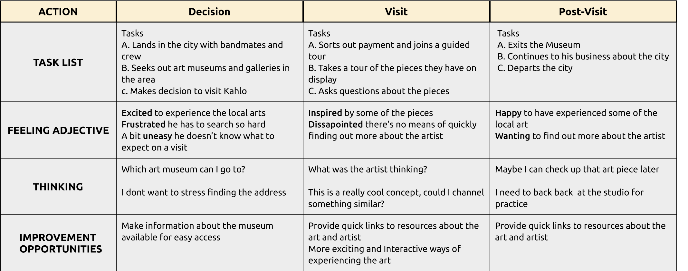Competitive Analysis
The competition offered limited accessibility to their art pieces.
I analysed the websites of 4 art museums around to see what they offered in terms of accessibiltiy and community. I found that they offered limited to no Information about the art pieces they had on display, and no supporting community around the museum and its services. This became an opportunity for the solution based on the insight that some Interviewees needed motivation to actually visit the Museum.
Key Insights
Accessibility to bring them in, Community to keep them around.
Based on the trends from the affinity mapping, I found that the major issues voiced by the Interviewees aggregated into 2 themes.
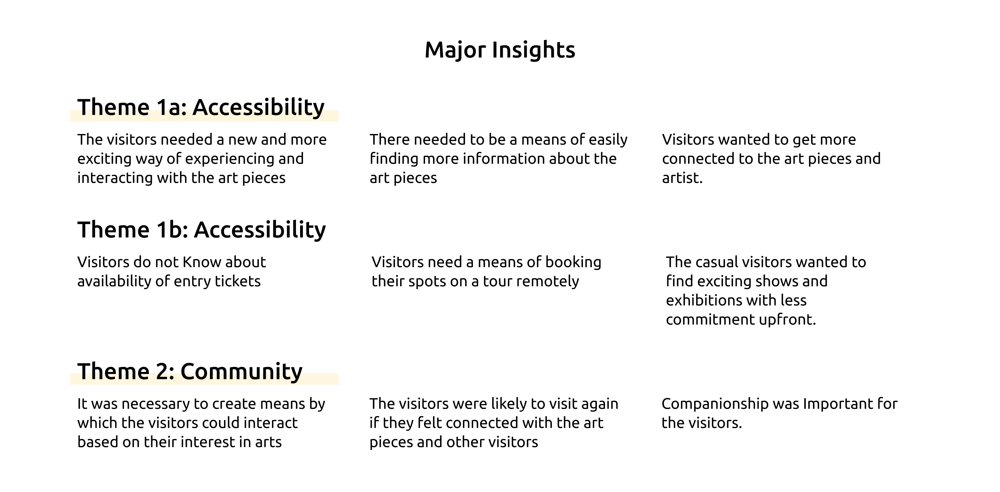Ideation & Prioritization
We (myself and a team-mate) brainstromed different possibilities of how we might find a solution based on the Insights stated above, via physical and digital touchpoints. We used the How Might We framework in conjunction with Crazy 8s ideation method. We had different ideas for digital touchpoints (Augmented Reality and Virtual Reality), to physical touchpoints (printing and disseminating flyers around town) to make the Museum and their articles more accessible and bring visitors in.
For the scope of the project, and budget considerations we decided a smartphone app could open up the Museum to the world, and be the basis for a community platform.
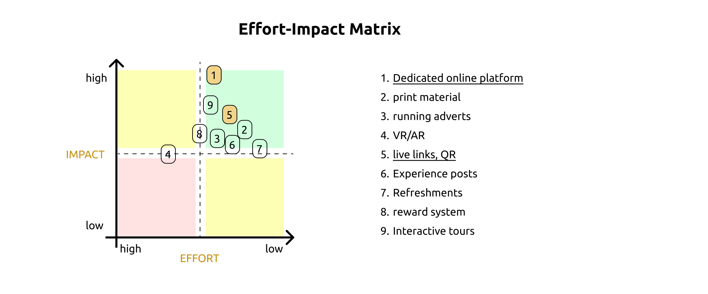Sketching & Wireframing
We compiled a list of proposed features that would populate the pages, based on a user flow I assumed. Later on, I performed a mini ‘card-sort’ to group the functionalities and create a basic layout for the screens.

I also created a storyboard of use-case scenarios. More rounds of competitive analyses were done to understand how the competition solved similar design challenges.
As the initial design phase continued, I made sure to base screen designs on feedback and findings from the user research.
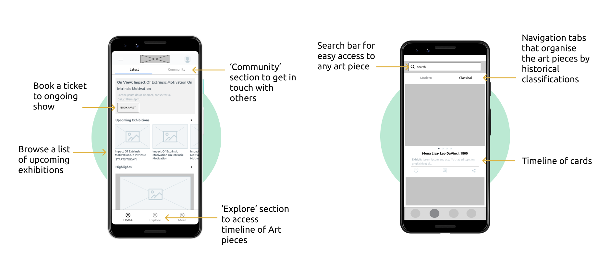Using the completed set of digital wireframes, I created a mid-fidelity prototype for usability testing. The primary user flow I connected was for accessing curated resource lists about art pieces, accessing the community features and booking tour/exhibtion tickets.
Testing & Improvements
3 major Improvemnts to the design
After conducting 2 rounds of usability tests and got ample feedback, I iterated my designs on 3 major aspects
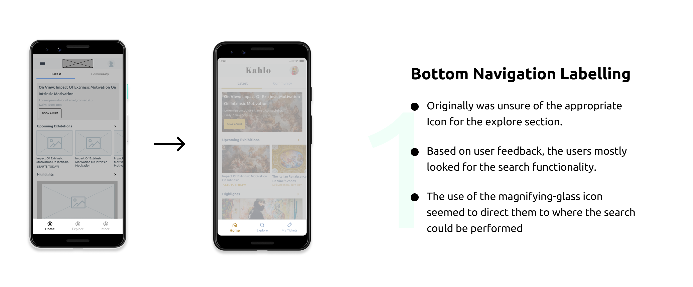 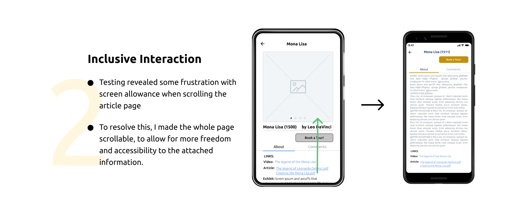 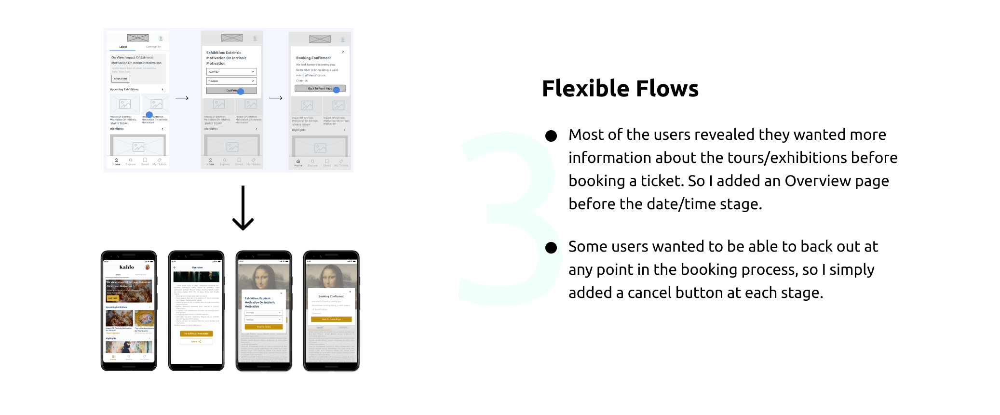
CONCLUSION
Impact & Learnings
"...This will keep me updated on the latest at the Museum."
The users felt happy they could access the gallery from the comfort of their devices, browse the latest showings and link up with other enthusiasts.
So, this was my first fully completed UX project, Yay! I had started another, but had to shelve along the way and follow through with the Google-Coursera Certification Course to get in-depth knowledge, step by step help on how the whole process is done. On that note, here's a few things I’ve learned:
A lot does change during the design process after your initial ideas and research. The design process is hardly ever straight-forward.
To always make copies of assets and deliverables for every stage of the design process.
Prospectives
Conduct more rounds of usability studies to find out how well user pain-points are being effectively addressed.
Adding more features: More accessible and inclusive forms of interacting with the art pieces (VR/AR, 3D viewing,etc).
More community orientated features: Commenting and liking, Bookmarking.
For more enquiries, you can email me at:
atolagbevictor.oo@gmail.com
Thank you for your time. Cheers!